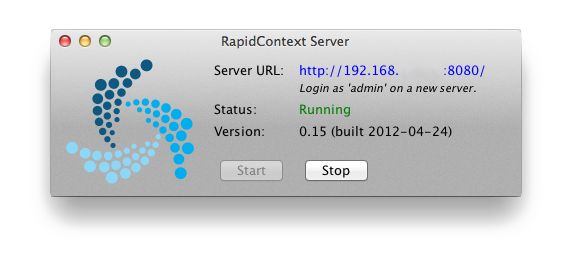
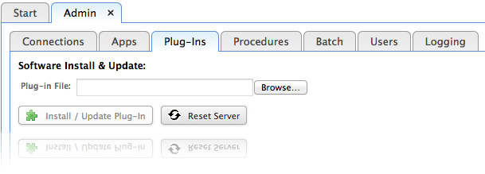
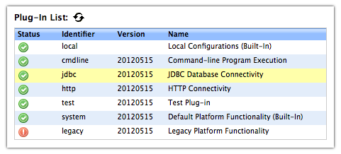
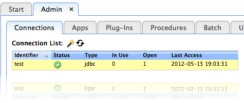

RapidContext
Access > Discovery > Insight
www.rapidcontext.com
RapidContext comes bundled with most of its dependencies. A special server launcher is also available for Mac OS X.
RapidContext can be installed either as a stand-alone server (recommended) or inside a Java Servlet container, such as Jetty or Tomcat. To install and start the stand-alone server, follow the steps below:
| Linux, Mac OS & Unix | Windows |
|---|---|
| 1. #> cd /opt | 1. Go to Program Files folder |
| 2. #> unzip rapidcontext-XYZ.zip | 2. Unpack rapidcontext-XYZ.zip |
| 3. #> cd rapidcontext-XYZ | 3. Open directory rapidcontext-XYZ\bin |
| 4. #> bin/rapidcontext | 4. Double-click rapidcontext.bat |
To install RapidContext in a Java servlet container, use the file rapidcontext.war inside the ZIP distribution and follow the deployment instructions for your server.
The RapidContext server is also available as a convenient RapidContext.app launcher application for Mac OS X. Once started, it shows a simple server control panel as below:

A new RapidContext installation can be accessed with the following login:
| Login: | admin |
|---|---|
| Password: | blank (anything is accepted) |
It is important to change the password for the default admin user before allowing other users onto the system.
Plug-ins are installed or updated by using the built-in Admin app. The steps below explain how to install or update a plug-in:
Plug-Instab
Software Install & Updatepanel at the top (see screenshot)

Browse...button and choose the plug-in file
Install / Update Plug-Inbutton
After installing or unloading some plug-ins, the client or server must be restarted for the plug-in loading to have effect:
Plug-ins can both be loaded and unloaded in the built-in Admin app. The steps below explain how to do it.
Plug-Instab
Plug-In Listpanel (see screenshot)

Loador
Unloadbutton
Normally, it is not necessary to completely remove a plug-in from the server. Leaving it in unloaded status ensures that it has no effect on the system. Nevertheless, a plug-in can be completely removed by the following steps:
Plug-Instab
Restartbutton in the Admin app
Connections to external systems can be created and modified in the built-in Admin app. The steps below explain how to do it:
Connectionstab

Connection Detailsview (to the right)

Saveto save and validate the connection
The connection will automatically be validated (tested) when modified or
created in the Admin app. Any previously open communication
channels will be closed and a single new one will be established. The results
are visible in the Connection Details
view.
A number of things should be noted regarding connections and connection editing:
Show all parameterscheckbox in the edit dialog.
Connection Listview.
Max Openand
Max Idle Secsparameters.
An environment is used to signal the RapidContext server location to the user. The environment name is displayed at the top right corner of the standard user interface, along with the user name. Environments are primarily useful when several RapidContext servers are in use.
There is currently no user interface for editing or creating environments, so they must be manually added to the plugin/local/environment/ directory (or the environment/ directory in your plug-in). The file name should follow normal storage rules, i.e. [identifier].properties. See below for an example environment file.
# General properties
id = EXAMPLE
type = environment
description = The example environment
connections = EXAMPLE/
The connections property is used as a prefix when locating connections. I.e. all connection identifiers in the environment should be named [prefix]/[identifier], but only the identifier part should be specified on usage (in procedures and similar).
This will make it possible to add support for multiple environments with similar connections in a future version.
A RapidContext server may currently only have a single environment loaded (although multiple connections are supported). This environment is used for all users, apps and procedures on the server. If several environments are required, separate RapidContext server instances should be installed.